A.1开场:法拉利首款纯电动车 LUCE 登场
“看不出是法拉利”的挑战性设计
主持人开场设问:遮住车标还能否认出这是法拉利。首款纯电超跑品牌车型,比4年前的普罗桑发布更具冲击力,车身比例也刻意区别于以往车型。
你还能看得出来这是一台法拉利吗
视频导航索引 · 高转青年-栗子
从外观比例、三电与悬架,到座舱仪表与驾驶哲学 — 每页关键帧均可点击跳回原视频对应时刻
A.2开场:法拉利首款纯电动车 LUCE 登场
LUCE 在意大利语中意为“光”,呼应“跃马之光”;整车设计由乔尼·艾维(Jony Ive)创立的 LoveFrom 主导,内饰曝光时被评价为“苹果汽车在马拉内罗被实现了”。
live fron的创始人JONYIVE是苹果前首席设计师
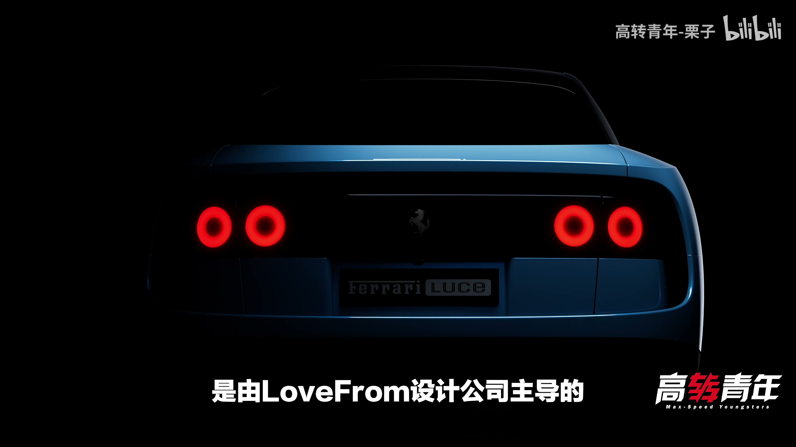
00:41B外观设计:短轴距与航空器美学
不同于新势力追求的长轴距经典比例,LUCE 反其道采用短前轴到踏板距离,灵感来自中后置超跑座舱前移设计;车身线条追求泪滴状流线造型与法拉利历史最佳风阻系数。
法拉利他居然做了一台短L113的电动车
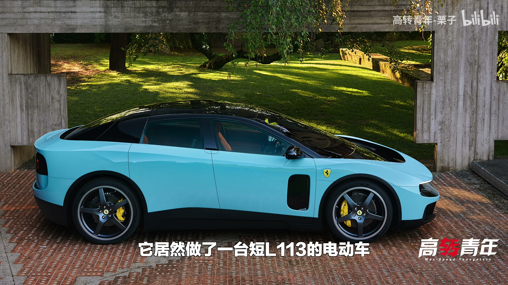
01:18C.1轮圈、轮胎与刹车系统
前轮23寸、后轮24寸,尺寸夸张但宽度克制(前265/后315),兼顾电动车续航需求;主持人认为更复古的轮圈样式会与车身风格更协调。
前轮给到了23寸
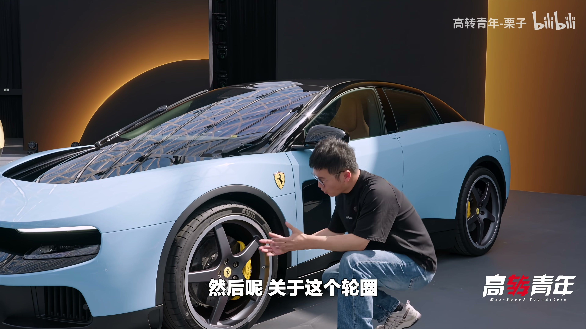
02:21C.2轮圈、轮胎与刹车系统
标配CCM碳陶瓷刹车盘,前390mm/后372mm,尺寸小于普罗桑;最大可提供500千瓦动能回收,产生0.68G减速度,理论上降低对物理刹车系统的依赖。
LUCHA最大能够提供500千瓦的动能回收
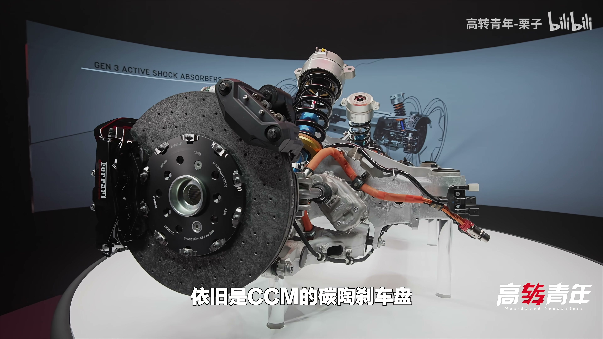
02:54D.1三电系统与操控:四电机、后轮转向
整备质量2260kg,数字不小,但对于四轮独立电机、四轮全主动悬架、122度电池的纯电动车而言已属轻量化优秀;车身底盘70%采用再生铝材料。
它的整备质量是2260kg
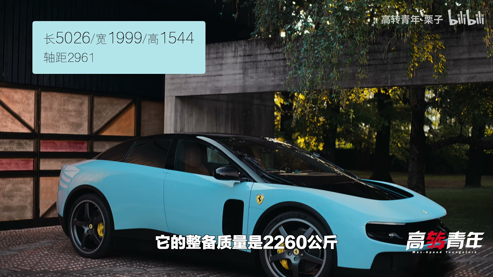
03:42D.2三电系统与操控:四电机、后轮转向
前轴两颗电机(来自F80)、后轴两颗电机,综合输出772千瓦/峰值1050马力,轮端扭矩达11050牛米;零百加速2.5秒,零到200为6.8秒,极速310km/h。
所以这辆车的零百是2.5秒
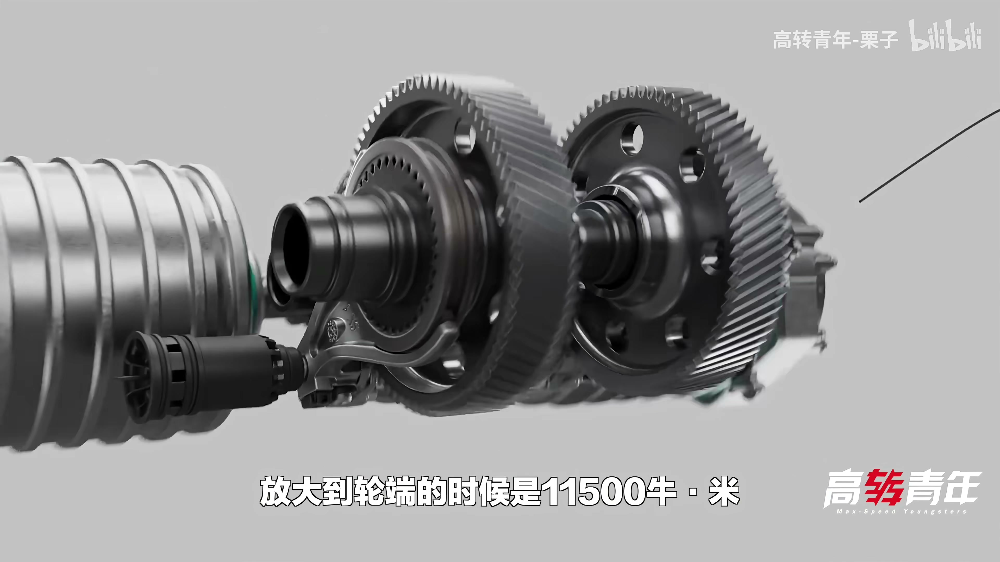
04:31D.3三电系统与操控:四电机、后轮转向
后轮转向数值不算激进,但妙处在于左右轮可独立调节角度——可同转、差量转,甚至内八或外八,分别优化过弯与直线加速的稳定性。
但它的妙就妙在它左右轮是可以单独调节的
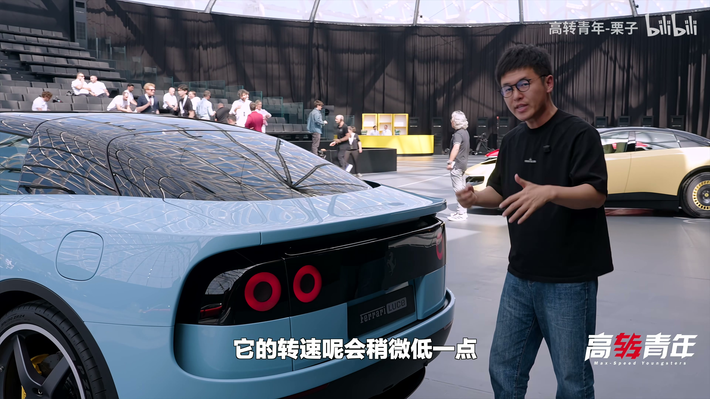
05:20EMultimatic 48V 主动悬架
由加拿大赛车工程公司 Multimatic 定制的48伏主动式悬架,是继普罗桑、F80之后第三代应用;液冷电机结合滚珠丝杠可直接为悬架注入能量,配合柔性后副车架,让整车体感重量减少400kg。
来自moi magic给他们定制的48伏主动式悬架
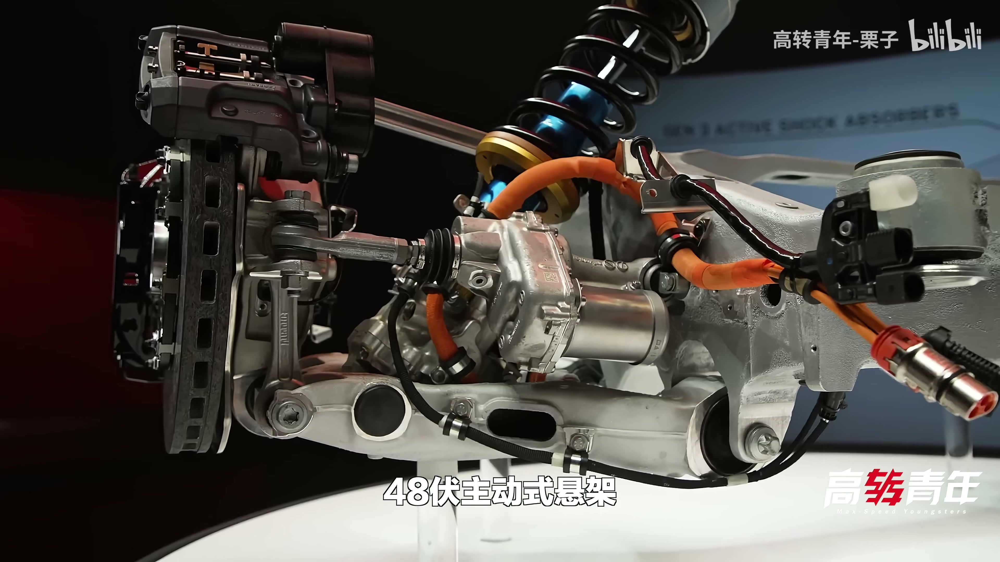
05:50F.1座舱内饰体验
车钥匙背面控制解锁与后备厢,插入后正面电子墨水屏图案会渐隐并转移到换挡杆位置提示启动;方向盘中央铝材采用再生铝阳极氧化工艺,手感细腻。
但它其实是一个电子墨水瓶
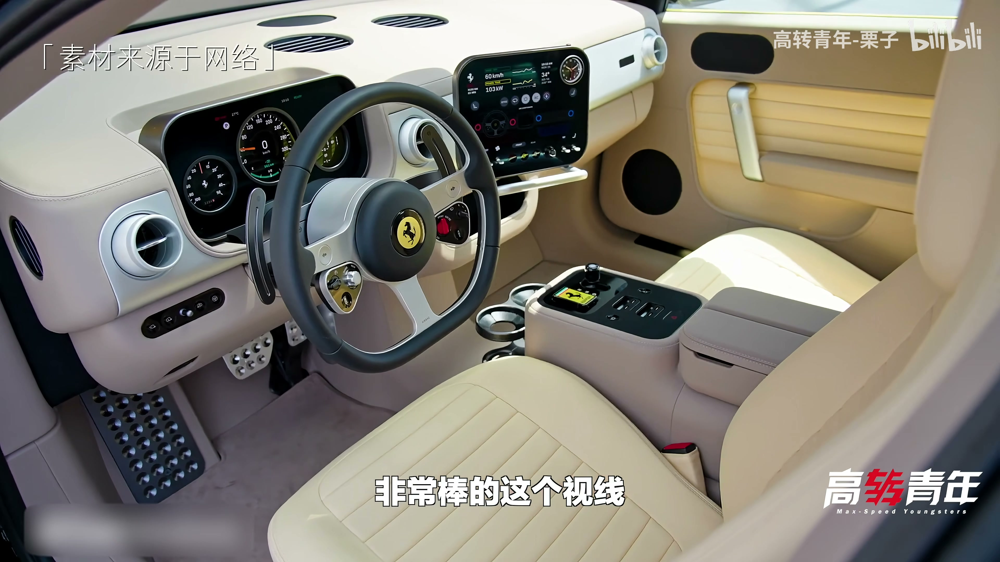
07:13F.2座舱内饰体验
拨片、空调旋钮、门窗按钮、出风口等多处均有独特声音设计;车内大量使用玻璃与再生铝材质,质感堪比车规级iPhone和MacBook。
简直就是车规级的IPHONE和MACBOOK的感觉
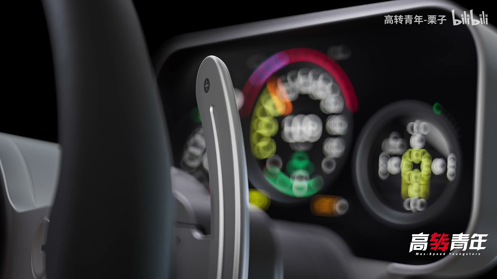
08:16G仪表与驾驶模式界面
仪表表面为LED屏幕显示挡位、驾驶模式与悬架模式,底部三个孔位由OLED显示配合一根机械指针构成,视觉精致;表盘内藏有专利机芯,整车累计超60项专利,并可切换弹射起步激活界面。
所以它是由两块OLED跟一个机械指针来组成的
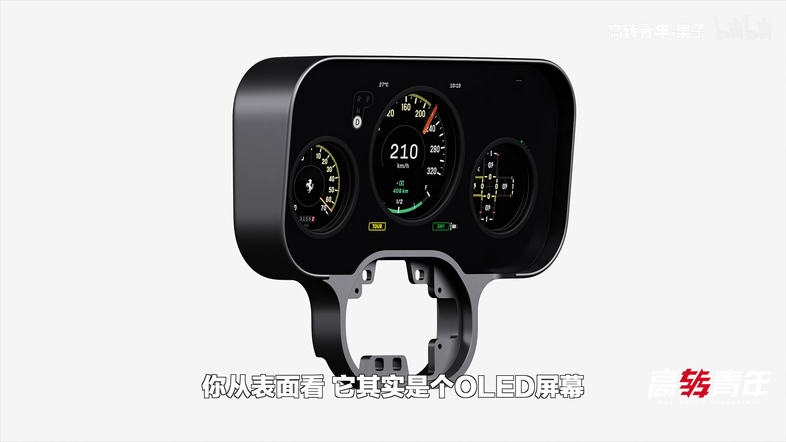
09:15H.1驾驶控制与声音哲学
驾驶位左右两个 Manettino 按钮分别控制动力与车辆动态,新增独立的避震器按钮——这是首款能单独调节悬架阻尼的法拉利车型,普罗桑与F80均未做到。
这应该是第一辆能够单独去调节悬架阻尼的
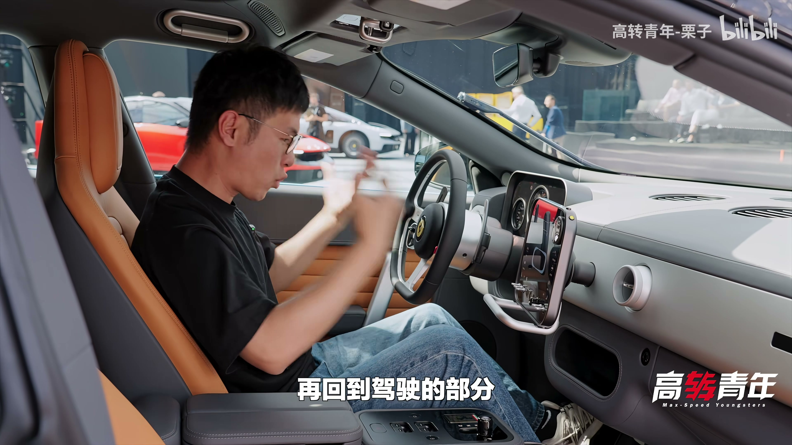
10:25H.2驾驶控制与声音哲学
电动车没有传统换挡逻辑,拨片改为调节加速与减速扭矩释放的五档强度,让起步不过猛、后段仍能持续加速,呈现更从容的体感加速过程。
你可以通过这个拨片来控制
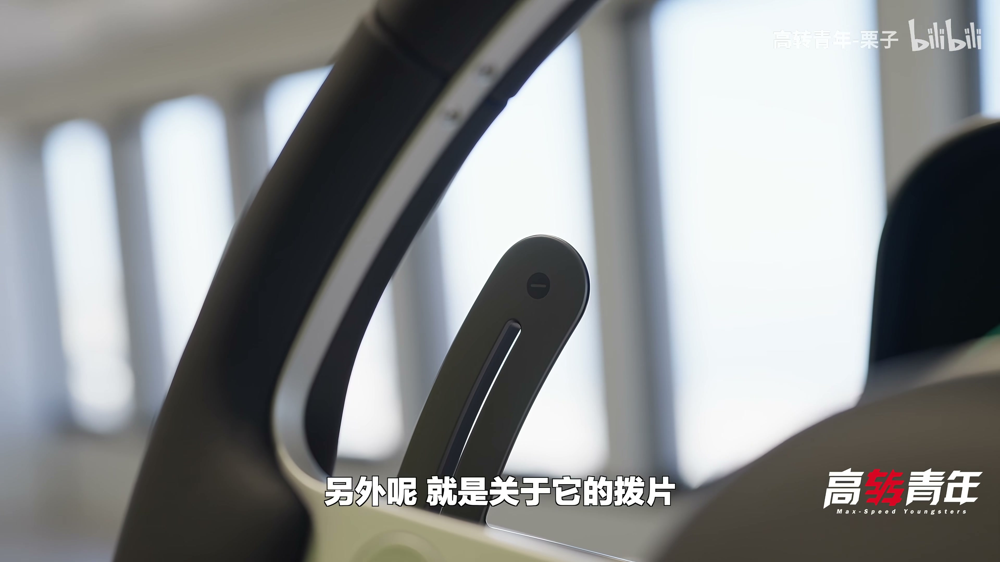
10:56H.3驾驶控制与声音哲学
法拉利没有为LUCE模拟V6/V8/V12声浪,而是在前轴中间安装采集器,拾取机械震动的真实声音并放大传入车内,营造类似电吉他的听感。
而是把这些机械在震动时候的真实的声音
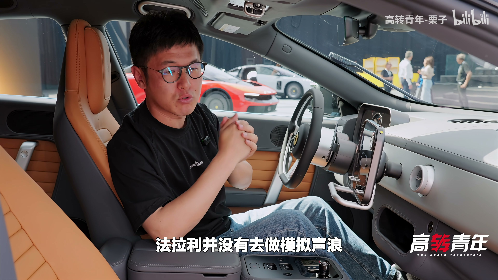
11:56一句话带走
四电机 1050 马力、Multimatic 48V 主动悬架、独立后轮转向,再加上放弃模拟声浪的真实机械声 — LUCE 用工程细节回答了"电动法拉利该是什么样"。